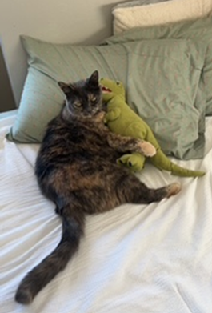

| Home | Pets | Hobbies |
My Pets
Here is some information about my pets.

Izzy is an 8-year-old black tabby. She loves napping in cozy spots around the house and enjoys chasing after toys.

Sally is a 16-year-old tortoiseshell. She’s a bit more relaxed now but still enjoys being around the family and getting some extra attention.